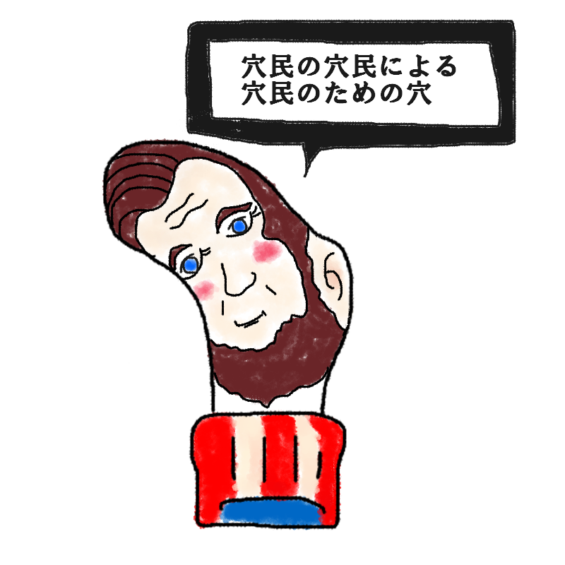

【超レア】シークレット診断結果
？ ？ ？ （キャラクター名前募集中）どこにも当てはまらない場所にあく人
【歴史の教科書と靴下を同時に揺るがす、
初代大統領の演説型】

「我々は、靴下の常識という名の重力から自由なのだ！」
全18種の枠組みを華麗に踏み台にし、足元から世界へ向けて演説をぶちかます最高指導者！
おめでとうございます！ 既存の18箇所のどの部位にも属さない、「足の歴史における最大のミステリーにして、誰もコントロールできないイレギュラーの極み」を引き当てました。
「一体そんなマニアックな場所にどうやって穴があいたのか？」という現実的な疑問に対し、彼は星条旗の演説台から荘厳なヒゲを揺らしながらこう言い放ちます。
「細かな部位など些末な問題に過ぎん！」と。
どこが破れているのか自分でもよく分かっていないその混沌とした状態を、政治の演説で強引に正当化してしまう圧倒的なカリスマ。
靴下という小さな布地の上で、彼なりの民主主義と自由が今、盛大に爆発しています。
このシークレットキャラの生態
- 18種のレギュラー枠を完全に無視した、奇跡的かつ謎めいた出現率
- 自分の足のどこに穴があいているかすら政治演説のテーマにしてしまう詭弁の才能
- 他の指たち（穴民）を置き去りにして、自分だけの国家を築き上げる独裁的ロマン
- 「見つけた人が思わず二度見する」ことに全力を賭けた、製作者からのサプライズギフト
最後にひとつ。
奇跡の確率でこの大統領と出会ってしまったあなたへ。
その神出鬼没な穴の開き方を誇りに思い、全穴（国民）に向けて高らかに勝利宣言を行え！
このキャラクターに名前をつける
思いついた名前を教えてね！
※このスタンプには日陰に消えたボツキャラが混ざっています
※この診断はただのお遊びです。
※靴下の穴が開く場所には個人差があります。